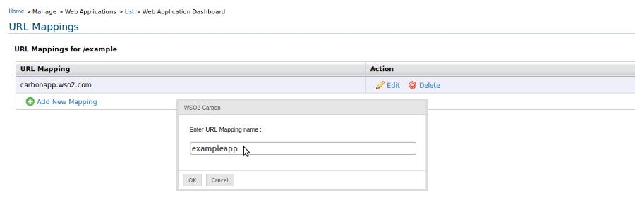
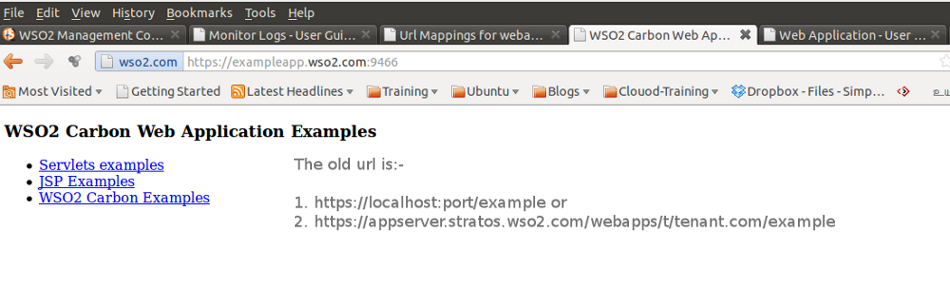

This page contains information on how to shorten your url of your hosted web application in our app server. If you deploy a web application with us, to access your web application, you need to enter: https://ip:port/webappname in your browser. If webapp is deployed in a tenant, then: https://ip:port/webapps/t/tenant_domain/webappname
But, now we provide a way to access your webapp with a short url like https://appid.wso2.com:port/ in any case whether you are having tenant or not. All what you need to do is to create a appid through your webapp information's page.
So, simply you are going to own your domain for your hosted web application
https://ip:port/webapps/t/tenant_domain/webappname ==> https://appid.wso2.com:port
Figure 1: urlmappings in webapp information page.
Once the webapp information page appears, when u click on  will have the options to control over your url mappings such as add, edit, delete.
will have the options to control over your url mappings such as add, edit, delete.

Figure 2: adding a urlmapping to webapp
Once you have created url mapping for your webapp for example :- appid = "exampleapp", then your domain will be "exampleapp.wso2.com". So, regardless of whether you are a tenant or not, you can access your web application by entering the url "https://exampleapp.wso2.com:port". The following image depicts how your web application is accessed through the short url.
Also, to access your own domain, you need to have a cname. In case cname is not available with you at the moment, then you can use /etc/hosts to put your domain entries pointing to your local ip. This can be applicable only for testing purposes.

Figure 3: accessing web application with shorten url.
You can follow the above procedure to access your "wsdl" with the short urls.

Figure 4: url mappings in services-dashboard
Then, you can access your wsdl using https://appid.wso2.com:port/?wsdl